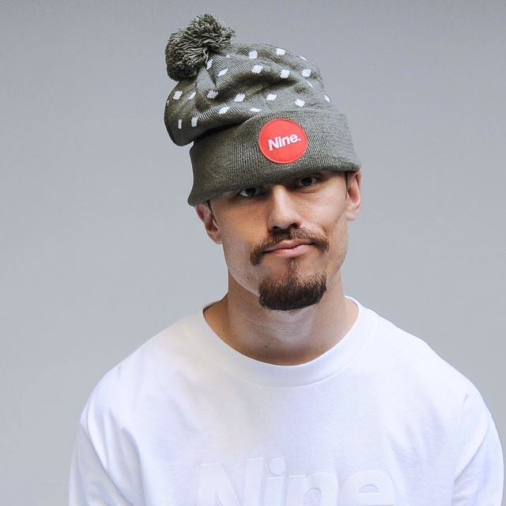
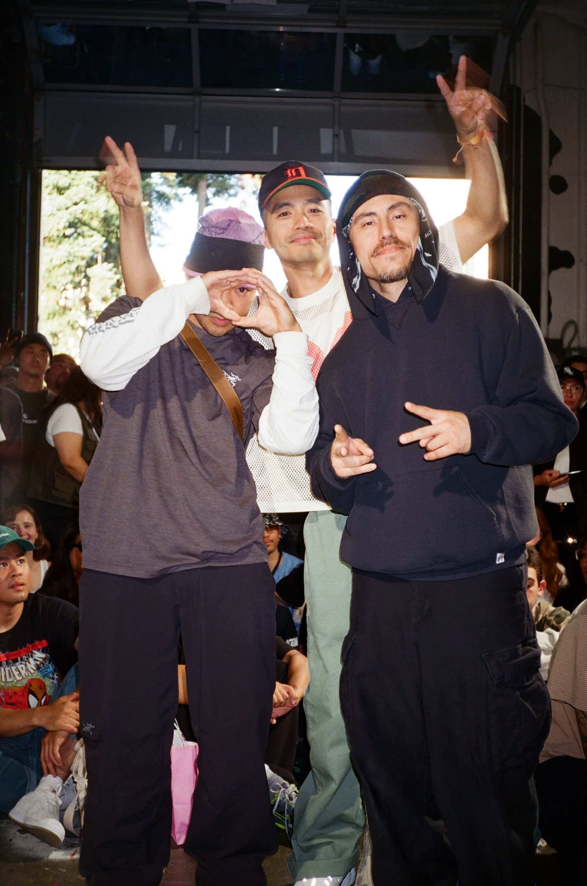
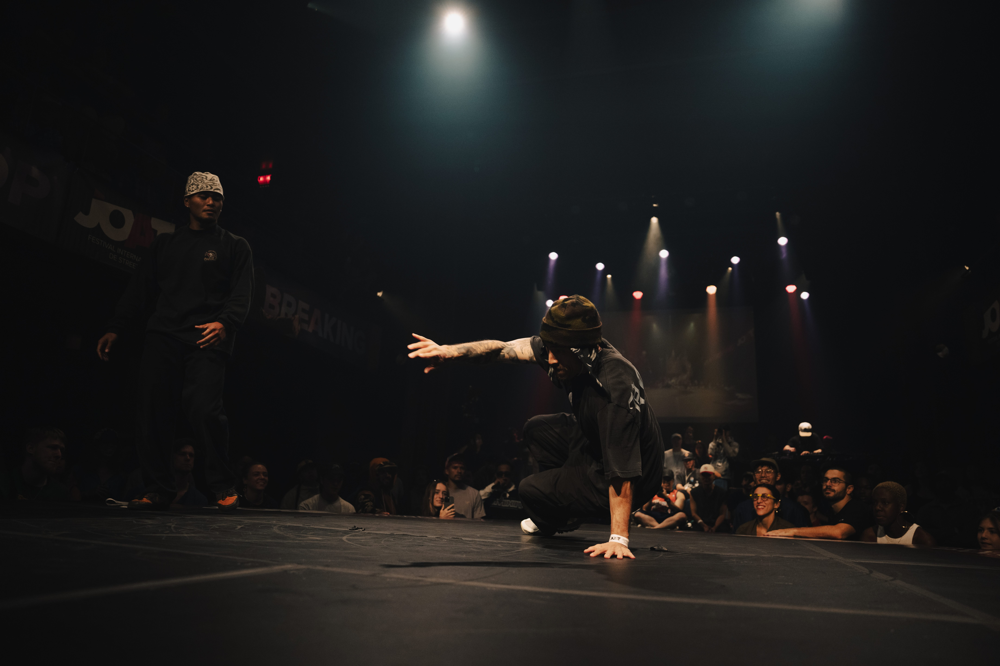
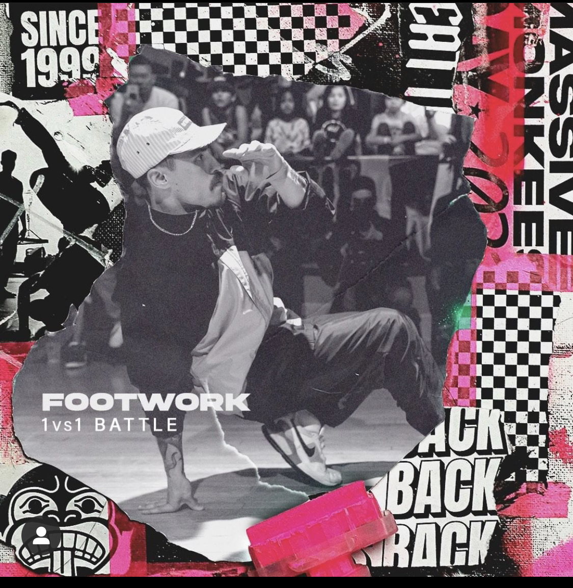

Who is Ash?
Ash Cornette approaches product and brand design through a distinct, multidimensional framework.
His goal is to solve complex problems, understanding human behavior, and business needs. His professional foundation sits at the intersection of technical operations, business strategy, and deep user empathy. Today Ash integrates AI in his design process to find solutions, develop and engineer products.
Having spent nearly a decade directing IT infrastructure at ACC-Tech and driving proactive client strategy at Bank of America, Ash brings a wealth of industry experience that he leverages into his design practice. He possesses a sharp understanding of core business objectives, technical architecture, risk management, and user friction points, allowing him to listen to stakeholders, uncover genuine user needs, and translate intricate systems into elegant, scalable digital solutions.
Ash earned his UX/UI Design Certification from Emily Carr University of Art + Design. His experience ranges from strategic brand positioning, foundational user research, information architecture, and interactive prototyping to complete developed and shipped products.
Adding a unique edge to his design practice, Ash is an internationally competitive street dancer and performing artist with the OURO Collective and partnering with studios like Tangible Interaction. Securing major championship titles across North America and performing on stage for global brands such as Cirque du Soleil, Leica Geosystems, and Takashi Murakami taught him rigorous discipline, spatial awareness, rapid adaptation, and real-time collaboration under high pressure. Whether architecting digital products, formulating brand identities, or directing live movement, his target remains consistent:
Product & UX/UI Design
UX/UI Design Certification | Emily Carr University of Art + Design (2026)
- Human-Centered Research & Strategy: Translating user behaviors, pain points, and feedback into actionable user flows, wireframes, and interactive prototypes.
- Design Systems & Visual Craft: Designing accessible, scalable UI kits and brand visual systems that align with brand identities and modern UI standards.
- Product Thinking: Aligning user goals with business KPIs, learned through hands-on experience in corporate and tech operations.
Design Recognition
Barely Notes | Shipped iOS App (2026)
Designed, built, and shipped a minimalist one-note app for iOS in six weeks. Solo. Live on the App Store.
FLUI | Event Participant (2026)
Participated in FLUI, a design event exploring fluid interaction and emerging interface patterns.
Service Design Jam | Participant (2026)
Collaborated on rapid service design prototyping during a weekend jam session.
Tech Operations & Client Strategy
Relationship Manager | Bank of America (2016–2018)
Managed proactive client engagement, financial products, and risk compliance while educating users on self-service digital platforms.
Operations Manager | ACC-Tech (2006–2015)
Led managed IT services, server setups, cross-platform troubleshooting, and hardware/software consultation for corporate clients.
Student Tech | Bethel School District
Deployed district-wide software/hardware solutions and led store operational sales.
Creative Discipline & Recognition
OURO Collective | Featured Performing Artist (2021–Present)
Main-stage productions (7y98D, SOTTO 51) at premier institutions including the Vancouver Art Gallery, Polygon Art Gallery, Roundhouse Performance Centre, Fall for Dance North (Toronto), and La Serre (Montreal).
Commercial Brands & Film
Featured dancer for Cirque du Soleil (L'Oreal), Leica Geosystems, Takashi Murakami, and MyMochi.
Competitions
Elephant Graveyard | San Francisco (2024)
Winner
Vancouver Street Dance Festival | Vancouver (2018)
Winner. Judge (2016).
Portland Top2Bottom | Portland (2017)
Winner. Finalist (2018).
Northwest Sweet 16 | Seattle (2013, 2016)
Winner. Finalist (2025).
Massive Monkees Anniversary | Seattle (2015)
Winner. Finalist (2016).



